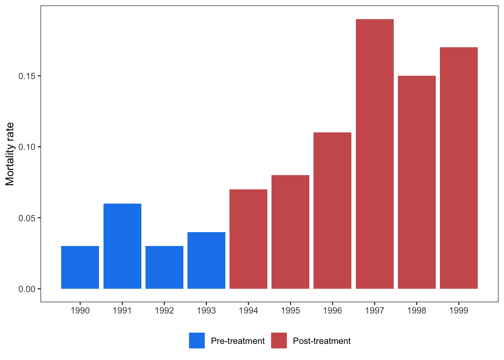
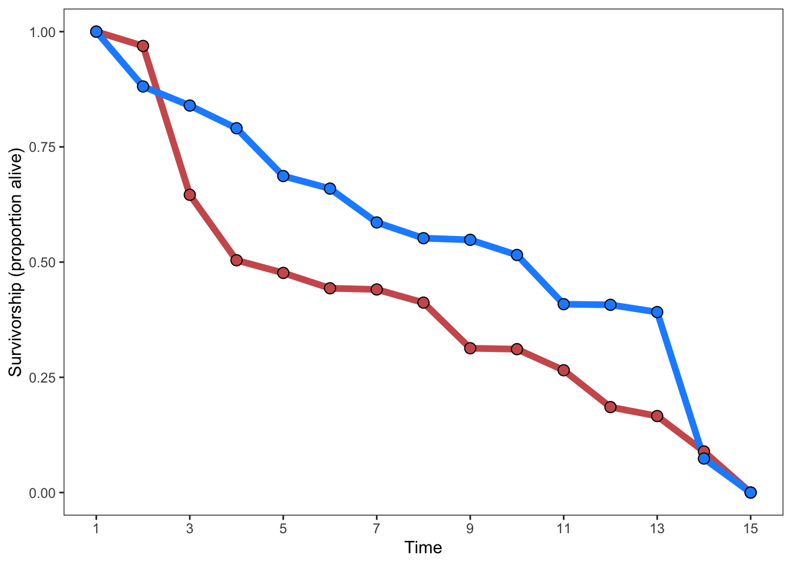
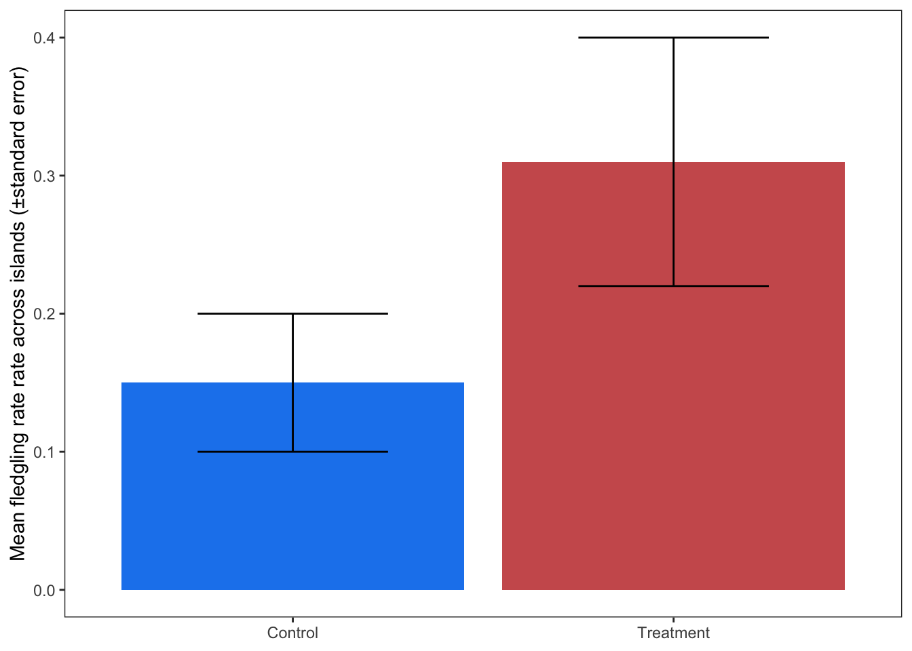

| fledged_predators_absent | fledged_predators_present | failed_predators_absent | failed_predators_present |
|---|---|---|---|
| 15 | 9 | 15 | 21 |
Discrete outcomes with discrete predictor
lnOR and lnRR
Some things are just black and white
Discrete outcomes are everywhere. Animals are either alive or dead, plants are eaten or not, some things are just black and white.
When comparing discrete outcomes between discrete treatments, we analyze this data with lnOR or lnRR effect sizes. These effect sizes require either discrete numbers per treatment group and outcome group or proportions and group size per treatment group. If the predictor is continuous we can analyze discrete outcomes with Zr effect sizes.
We recommend structuring lnOR/lnRR extraction databases wide, with four columns, one for each of these groups.
For example, imagine you are meta-analyzing the influence of introduced predators on the breeding success of birds. You are extracting data from articles that report the proportion of monitored nests that successfully fledged on islands with and without predators. These values correspond to a contigency table that looks like this:
| Fledged | Failed | ||
|---|---|---|---|
| Predator present | \(a\) | \(b\) | |
| Predator absent | \(c\) | \(d\) |
Your empty database structure for these values might look like this (ignoring all the other important columns, like latitude, longitude, article id, etc). Thefledged_predators_present, failed_predators_present, fledged_predators_absent, and failed_predators_absent correspond to a, b, c, d cells of your contingency table and to the arguments required by metafor::escalc.
Now let’s discuss the formats this data is often presented in:
The easy cases
Let’s start with some ideal, dreamy lnOR type data.
Proportion or % data with total population

These are also straightforward. Extract the percent and reconstruct the number of individuals in each outcome category based on total n, which the authors hopefully reported in the text.
Missing data
No control group
Some experiments only report the experimental treatment, assuming that the control has a probability of 50%. In these cases, you’ll have to assume the same to calculate lnOR, e.g., by populating one of the columns with 50 / 50 values (generally with the same total N as the first row). For example, if a study only reports:
| Outcome A | Outcome B | |
|---|---|---|
| Treatment | 35 | 15 |
Take the row sum (\(35 + 15 = 50\)) and populate the missing values (\(0.5 * 50\)) for the control:
| Outcome A | Outcome B | |
|---|---|---|
| Treatment | 35 | 15 |
| Control | 25 | 25 |
Effect sizes like this should be flagged for sensitivity analyses (or excluded as part of your a priori exclusion criteria).
No sample size
Looks like you’re out of luck buddy :(
Other cases
Aggregating multiple measurements
Some studies may report a response like survivorship over multiple years before and after some intervention (e.g., eradication of a predator, change in management policy, etc). The best approach is to summarize across years per treatment.

To extract data like this, you would need to determine the total population size for each year (which is hopefully reported) and multiply this by the proportion of that year to derive the number of individuals that lived and died per year. The resulting table would look like this:
| year | treatment | total_individuals | number_deceased | mortality_rate |
|---|---|---|---|---|
| 1990 | Pre | 150 | 5 | 0.03 |
| 1991 | Pre | 131 | 8 | 0.06 |
| 1992 | Pre | 160 | 4 | 0.03 |
| 1993 | Pre | 171 | 7 | 0.04 |
| 1994 | Post | 153 | 11 | 0.07 |
| 1995 | Post | 158 | 13 | 0.08 |
| 1996 | Post | 111 | 12 | 0.11 |
| 1997 | Post | 95 | 18 | 0.19 |
| 1998 | Post | 98 | 15 | 0.15 |
| 1999 | Post | 101 | 17 | 0.17 |
Then, take the sum of total_individuals and number_deceased and calculate the number living (number_living):
| treatment | total_individuals | number_deceased | number_living |
|---|---|---|---|
| Pre | 612 | 24 | 588 |
| Post | 716 | 86 | 630 |
The columns number_deceased and number_living provide you the contingency table necessary to calculate lnOR, after casting this wide by treatment:
library("tidyr")
dat.sum |>
pivot_wider(names_from = "treatment",
values_from = c("total_individuals",
"number_deceased",
"number_living") ) |>
knitr::kable()| total_individuals_Pre | total_individuals_Post | number_deceased_Pre | number_deceased_Post | number_living_Pre | number_living_Post |
|---|---|---|---|---|---|
| 612 | 716 | 24 | 86 | 588 | 630 |
However, what do you do if there is no sample size provided (e.g., total number of individuals)? In this case, your best bet is to summarize the proportion survived into the mean ± SD across years per treatment group and use this to calculate SMD. Since these values are proportions, be sure to transform these values (see here.
Unfortunately, the resulting effect size will have year as the unit of replication instead of number of individuals and should not be directly compared to other lnOR type data where individuals are the unit of repliation.
More than 2 discrete outcomes
What if a study presents several categorical or ordinal outcomes?
Imagine a study presented multiple categorical outcomes instead of a binary? If your dataset is otherwise binary, you can extract this data by summing or excluding the non-relevant outcomes.
However, there must be cases where 3 outcomes are actually real and not just a product of lumping or splitting.
Survivorship curves
The simulated data below is stupid and sucks. Please fix

In this case, the y axis is the proportion (\(p1\) and \(p2\)) for each group (group 1 and 2). The meta-analyst needs to extract the total number of individuals in groups 1 (blue) and 2 (red) at time point 1, which can then be multipled by the total number of individuals at the beginning of the experiment. This will yield \(a\) and \(c\) for the two groups. \(b\) and \(d\) can then be found by subtracting from the total \(n\):
| time | \(p\) | N | Alive | Dead | |
|---|---|---|---|---|---|
| Group 1 (blue) | 3 | \(p1\)=0.71 | \(n1\)=150 | \(a\)=107 | \(b\)=43 |
| Group 2 (red) | 3 | \(p2\)=0.46 | \(n2\)=150 | \(c\)=69 | \(d\)=81 |
As one can see, this type of data also poses a classic time-series challenge, which can face all effect sizes. We recommend extracting the data for each time point and then using random effects to control for temporal autocorrelation in your meta-analytic model (see here). An alternative is to extract the time point with the greatest difference between control and treatment and analyze that.
Mean±error discrete outcomes
Sometimes discrete outcomes are summarized into mean±error across trials/sites/islands/etc. For example, a paper that monitored fledgling rates across nests on separate islands, calculated the mortality rate, and then summarized by mean±error across islands.
This data format lends itself naturally to SMD/lnRoM/Zmu type effect sizes. However, the sample size for the mean±error in these summaries are the number of trials/sites/islands/etc instead of the number of individuals (or nests). If the unit of replication of the rest of your dataset is the number of individuals (or nests) then this effect size would have vastly less weight in your models (and should be analyzed separately).

Moreover, as you can see, this figure presents standard error, not standard deviation. Converting standard error to standard deviation requires the sample size used by the study authors to calculate standard error in the first place, which is the number of trials/sites/islands/etc.
To reconstruct the number of individuals and calculate an lnOR type effect size with individuals as the unit of replication, you can simulate the underlying binomial or beta-binomial distribution behind these mean±sd summaries. This requires the following information:
the number of sites used in calculating the standard error.
the number of individuals across all sites.
The author-reported mean proportion
The author-reported standard deviation
Let’s work through this example and imagine that the figure above was from a paper that reported nest fledging rates for 10 islands in an experimental treatment (rats poisoned) and for 10 sites in a control treatment (rats left alone). The total number of nests monitored per treatment was 300—or 30 per site. We start by converting the extracted standard error (\(se\)) to standard deviation (\(sd\)) in our data.table we extracted from the figure above:
| mean | group | se | n_sites | n_individuals | sd |
|---|---|---|---|---|---|
| 0.15 | Control | 0.05 | 10 | 30 | 0.1581139 |
| 0.31 | Treatment | 0.09 | 10 | 30 | 0.2846050 |
Now we check whether the author-reported standard deviation is overdispersed relative to the theoretical standard deviation (\(sd_{theoretical}\)) of the binomial distribution. If it is greater than \(sd_{theoretical}\), we’ll use the beta-binomial distribution. If it isn’t, we’ll use the binomial distribution:
[1] TRUEIt looks like our data is not truly binomial but beta-binomial. See here and here for how to draw from the binomial distribution.
For each our row of our extracted data (which is only 2), we will draw from the beta-binomial distribution with the R package extraDistr (Wolodzko 2023). This requires the variance (\(sd^2\)) and two shape parameters that describe the beta distribution (\(\alpha\) and \(\beta\)). See here for the formulas for calculating \(\alpha\) and \(\beta\). We’ll add these to each row of the dataset dt:
library("extraDistr")
dt mean group se n_sites n_individuals sd
<num> <char> <num> <num> <num> <num>
1: 0.15 Control 0.05 10 30 0.1581139
2: 0.31 Treatment 0.09 10 30 0.2846050dt[, var := sd^2]
dt[, r := (mean * (1 - mean) / var) - 1]
dt[, alpha := mean * r]
dt[, beta := (1 - mean) * r]Now, we’ll draw from the beta-binomial distribution. Each draw returns a vector equal in length to the number of sites, with each element giving the number of fledged nests:
rbbinom(n = dt$n_sites[1],
size = dt$n_individuals[1],
alpha = dt$alpha[1],
beta = dt$beta[1]) [1] 4 0 2 1 6 0 1 0 1 1The sum of this is the total number of nests that fledged across all sites. The full workflow:
n <- c()
for(i in 1:nrow(dt)){
n <- rbbinom(n = dt$n_sites[i],
size = dt$n_individuals[i],
alpha = dt$alpha[i],
beta = dt$beta[i])
dt[i, n_fledged := sum(n)]
}
# Now calculate total number individuals:
dt[, total_individuals := 30 * n_sites]
dt[, n_dead := total_individuals - n_fledged]
knitr::kable(dt)| mean | group | se | n_sites | n_individuals | sd | var | r | alpha | beta | n_fledged | total_individuals | n_dead |
|---|---|---|---|---|---|---|---|---|---|---|---|---|
| 0.15 | Control | 0.05 | 10 | 30 | 0.1581139 | 0.025 | 4.100000 | 0.6150000 | 3.485000 | 18 | 300 | 282 |
| 0.31 | Treatment | 0.09 | 10 | 30 | 0.2846050 | 0.081 | 1.640741 | 0.5086296 | 1.132111 | 38 | 300 | 262 |
Now you have the ingredients to calculate lnOR or lnRR. The total sample size went from 10 per treatment (number of sites) to the number of individuals (300 per treatment!), making the unit of replication comparable with the other effect sizes in your dataset (if you’re conducting an lnOR meta-analysis with individual as the unit of replication).
Tip
Note, that if there were variable numbers of nests per site, then you’d want to create a longer dataframe (e.g., by merging your extracted summaries with a table of number of individuals per site). Then loop through this longer data frame, specifying \(1\) as n.
Although, the study’s authors probably shouldn’t have taken the mean±sd in that case….Hmmmm….
LC50?
Many laboratory studies, for example on the effects of a pollution agent on mortality, report LC50, which is the dosage at which 50% of the exposed individuals experience an outcome (e.g., die).
These figures look like this:
#' @Kyle?LC50 is already its own formula. We do not know how to convert this to lnOR or lnRR. If you’re faced with lots of this data, you could consider converting survivorship curves, or other data sources, to LC50—and deriving a sampling variance formula or using SAFE to simulate sampling variance.
Model estimates
According to Gemini, you can multiply an unstandardized logistic regression coefficient by 1.81 to convert it to lnOR. But not sure if that’s true—and not sure how to calculate sampling variance.
References
Wolodzko, Tymoteusz. 2023. extraDistr: Additional Univariate and Multivariate Distributions. https://doi.org/10.32614/CRAN.package.extraDistr.